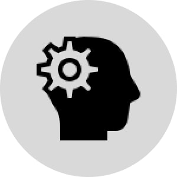
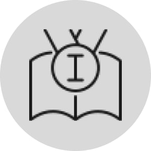
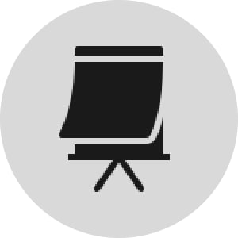

АКТИВНОСТІ
{{ activity.description }}
{{ activity.description }}
Гуртки. Олімпіади. Проєкти

Гуртки – це факультативи, де студенти займаються тим, що їм подобається. Окремий бонус – студент може долучитися до роботи гуртка, діяльність якого відмінна від його основного процесу навчання. Тобто, навчаючись на факультеті електроніки, студент може взяти участь у гуртках соціогуманітарного напрямку або навпаки – студент-лінгвіст може вивчати ракето-космічну інженерію.
Також в КПІ ім. Ігоря Сікорського проходять І етапи Всеукраїнських студентських олімпіад, переможці яких беруть участь в ІІ етапах Всеукраїнських студентських олімпіад.

I етап студентських
олімпіад в КПІ
II етап Всеукраїнських студентських
олімпіад в КПІ

Крім олімпіад є ряд традиційних проєктів та заходів, які проводять для студентів та за їх
активної участі, зокрема KPI-OPEN та День першокурсника.
KPI-OPEN
День першокурсника
Безкоштовні курси
Після переговорів МОН та КПІ з представниками Coursera, студенти та викладачі КПІ ім. Ігоря Сікорського можуть безкоштовно зареєструватися та отримати доступ до більш ніж 5200 курсів і 2200 керованих проектів від провідних університетів і партнерів Coursera. Окрім Coursera студенти також можуть користуватися іншими платформами, а також відвідувати курси, що належать саме КПІ (наприклад, курси іноземних мов тощо).
Усі важливі Telegram-канали КПІ
|
{{channel.name}}
|